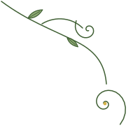
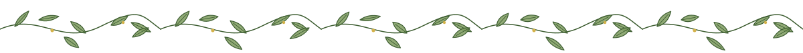
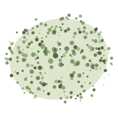
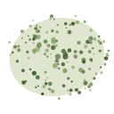
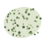
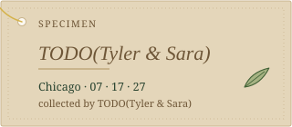
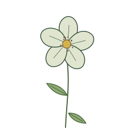
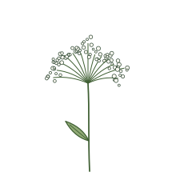
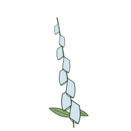

Inspo board · theme two of two
A glasshouse in July. Creme paper, a light-blue wash where the sky shows through the glazing, moss and leaf greens doing the work of ink, one thread of pollen gold. Every page is laid down like a pressed specimen: off-centre, labelled in italic, sometimes overlapping the sheet beneath.
Source of truth: docs/design/brief.md §2 facts, §4 visual direction. Tokens: src/themes/conservatory/DESIGN.md (lints 0/0). Art: scripts/art/conservatory.mjs. Anything not in the brief reads TODO(Tyler & Sara).
Every colour has a job. Moss ink does all the talking; the pale greens and blues are washes and may never carry text. Ratios below are computed in-page against the ground each colour actually sits on (WCAG 2.x; AA for body text is 4.5:1).
The Wash Rule: text on sky is sky ink, text on moss-wash or kraft is moss ink or soil. The Pollen Rule: gold at most twice per viewport, or it becomes gilding, which is the other theme's job.
#2A4430#4F6338#3F5F33#7E9C5F#DFE5CF#D4B24A#D4E4EC#2B4A5A#E4D6BA#C9B48C#6E5637#F4EEDF#EAE2CE#FBF8F1#4F5A48#C8C1AC#8B3A2BEvery backgroundColor/textColor pair in the theme frontmatter. Lowest first. npx design.md lint reports 0 errors, 0 warnings.
| Component | Text | Ground | Ratio |
|---|---|---|---|
| specimen-label | soil | kraft | |
| button-accent | on-tertiary | tertiary (pollen) | |
| eyebrow | secondary | neutral | |
| tag-moss | on-secondary | secondary | |
| caption | soil | neutral | |
| button-primary-hover | on-primary | leaf-deep | |
| link | leaf-deep | neutral | |
| card-muted-text | on-surface-muted | surface | |
| banner-error | on-error | error | |
| banner-sky · countdown | sky-ink | sky | |
| input-error | error | surface | |
| nav | primary | kraft | |
| section-alt | on-surface | moss-wash | |
| section-parchment | on-surface | neutral-variant | |
| button-primary · nav-current · section-inverse | on-primary | primary | |
| hero · titles · prose | primary | neutral | |
| card · card-pressed · input · button-ghost | on-surface | surface |
Sara + Tyler
Chicago Athletic Association Hotel · 12 S Michigan Ave
The date
07 · 17 · 27
Saturday, July 17, 2027
They met at Allison and Jamie's wedding. TODO(Tyler & Sara): the rest of the first chapter, in your words, about the length of this paragraph. Spectral at 20px carries the opening of Our Story; the running text below it is 17px on a 1.65 line so it stays comfortable on a phone in a car.
Body text, body-md. Gloock is a single-weight display face with a botanical curl in its terminals; it looks engraved rather than typed, so hierarchy comes from size and space, never from bolding. Spectral has a true italic and real small caps, which is why eyebrows and tags are set in small capitals instead of tracked uppercase. Cardo italic speaks only from kraft labels.
TODOdaysSara remembersTyler remembers
Specimen labels · Cardo italic
Starved Rock · first "I love you" · TODO(Tyler & Sara)
Richardson Farm · TODO(Tyler & Sara)
Madison waterfront · TODO(Tyler & Sara)
Museum of Ice Cream · TODO(Tyler & Sara)
Two slots only: the label on a pressed card and the place/date line on a tag. Never a heading, never a button.
Searched with ui-ux-pro-max (--domain typography: "botanical garden editorial serif elegant", "wedding luxury classic invitation"; --domain google-fonts for each face). Licences confirmed from google/fonts METADATA.pb.
| Option | Faces | Verdict |
|---|---|---|
| Conservatory (chosen) | Gloock · Spectral · Cardo italic — all OFL (Duarte Pinto; Production Type; David Perry) | Engraved botanical display; screen serif with true italic and small caps; scholarly italic for labels. Three families, four files. Visibly different from the editorial baseline (Libre Caslon Display + Newsreader) and from Gilded Hour (Cinzel + Josefin Sans + Big Shoulders). |
| Index: "Wedding/Romance" | Great Vibes + Cormorant Infant | Rejected. Script on a serif is the centred-script-on-blush template the brief bans; Cormorant is on the anti-reference list. |
| Index: "Classic Elegant" | Playfair Display + Inter | Rejected. Both faces banned by the brief and by lint:css; the pairing is the most common AI-default on the web. |
| Index: "Editorial Classic" | Cormorant Garamond + Libre Baskerville | Rejected. Cormorant banned; Baskerville is fine but cooler and more bookish than a glasshouse wants. |
| Runner-up considered | Libre Caslon Display + Newsreader | Already the repo baseline; Conservatory must read as a different room. Caslon's terminals are straight where Gloock's curl. |
node scripts/generate-art.mjs conservatory writes eleven SVGs to public/assets/art/conservatory/. Same bytes every run (seeded PRNG), theme colours only, no external references. Line art at 1.25px in leaf ink with leaf fills; never watercolor, never clip-art.









Text lives in the left seven columns; the right five are the mounting area where pressed cards, tags and ornament hang and overlap. Sections change by wash, not by equal whitespace. Navigation is a rail of kraft tags on the left at 1440px and a single Menu tag plus a two-action bottom bar at 390px. Nothing is centred by default. Thumbnails are plain artboards, not device frames.
Awwwards entries come from the botanical tag listing fetched 2026-09-05; the listing itself only names sites and generic traits ("big background images", "parallax"). None were audited page-by-page here: run hallmark study <url> before borrowing anything specific. Herbarium references describe the format, not a particular sheet.
Awwwards botanical tag · listed as Site of the Day and Developer Award, Aug 31 2024
Borrow: the confidence to let one botanical idea carry a whole page; restraint in colour count.
Avoid: an experience that needs a fast GPU. Grandparents on hotel Wi-Fi are the audience.
Awwwards botanical tag
Borrow: institutional calm; text that reads like a foundation, not a shop.
Avoid: full-bleed photography doing all the work. This site cannot lean on venue photography (Hyatt imagery is not reusable) and AI imagery never ships as a photo of the couple.
Awwwards botanical tag
Borrow: product-label typography as a design device, which maps onto specimen labels.
Avoid: campaign-site density and motion on every scroll step; our motion budget is one settle per page.
Awwwards botanical tag
Borrow: an editorial e-commerce grid that tolerates asymmetry.
Avoid: the shop macrostructure (hero, product rows, promo strip); a wedding site's job order is inform, act, celebrate.
Digitised specimen sheets at institutional herbaria (Harvard University Herbaria, Kew, the Field Museum in Chicago); Emily Dickinson's herbarium at Houghton Library as the pressed-flower album.
Borrow: the format itself: specimen mounted off-centre with breathing room, label bottom-right, accession stamp, the sheet's own hairline. Overlap when two specimens share a sheet.
Avoid: literal brown-paper textures and faux-aged filters; paper here is a flat colour.
Lincoln Park Conservatory: built in phases 1890–1895, designed by Joseph Lyman Silsbee with M.E. Bell; four display houses (Palm House, Fern Room, Orchid House, Show House). Garfield Park Conservatory: opened 1908; run by the Garfield Park Conservatory Alliance (formed 1998) with the Chicago Park District.
Borrow: the room names as a mental model for sections (palm court, fern room, show house); glass-and-iron light as the sky wash.
Avoid: claiming any event happens there. The venue is the Chicago Athletic Association Hotel; the conservatories are a possible "Share an Adventure" card, curated later.
Two complete, switchable designs for the same building. The test: with colour removed, a guest should still tell them apart from the layout alone.
Gilded Hour · Art Deco (per brief §4)
Conservatory · Botanical
Scored against wedding-site-standards §5 for this board and the token system it documents, not for a shipped page. Ship gate: every axis ≥ 7 and Usability ≥ 8.
TODO(Tyler & Sara).Open questions for Tyler and Sara: which plants belong on the specimen labels (a flower from the bouquet, moss from Starved Rock); whether the "+" in pollen is the monogram; whether the tag rail should show room names from the CAA or page names; and whether the wedding-week sky band should show weather.